Nacho Finance Nacho Finance 的灵感来自 tomb.finance，是一种铸币税风格的算法稳定币协议，旨在为 Polygon 网络上的以太坊持有者带来高年利率和低费用。 Nacho Finance 是一个多代币
Naked Matching girl cards vol.1 连接你的钱包并按下免费卡按钮以获得1张NFT女孩卡。剩下的8张卡可以通过购买卡以相同的概率单独获得。(10 MATIC) 当您收集所有 9 个卡片部件并完成图
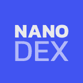 Nanodex Airdrop Nanodex 的创新协议为市场带来了重大机遇，并赋予了从各种受支持资产中进行选择以进行借贷、杠杆交易和借贷资金的能力。 访问我们的网站 将 Metamask 或 Trustwallet 切换到 BSC 智能
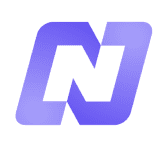 NAOS Finance NAOS Finance 设想了一个无需许可且透明的贷款市场，借款人可以快速、轻松地获得资金，而贷方可以自由、安全地部署资金。为了实现这一点，NAOS Finance 协议将复制
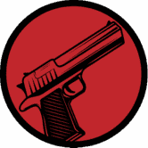 Narcos Finance 纳尔科斯金融是币安智能链上的一个收益农业，具有超通缩代币的收益聚合器，具有独特的策略，需要 NFT 才能与其智能合约进行交互。 NACOS Finance 是唯一以 3 种不同代
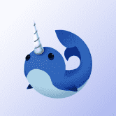 Narwhalswap Narwhalswap 协议 — 具有可持续性的币安智能链上的 DeFi。他们正在构建一个新的独特的 dapp 和协议，以提升 DeFi 的价值，创造多元化的投资，并成为金融服务的未来。
NEAR Accounts Marketplace 关于 Marketplace Bet 账户名的两个基本操作：如果您猜到该账户名被低估了，将被索取更高的价格——它会为您带来高达 50% 的利润 。索赔：如果您想自己获取该账户名并且
NEFTiLAND NEFTiLAND 是一款受 Pet Tamer 启发的 NFT 游戏， 是基于区块链的多人龙赛，在 BSC 上构建和运行，任何人都可以通过智力游戏和生态系统进行游戏并赚取代币。目前在网络上运行
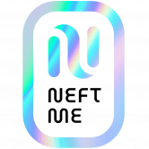 NEFTME NEFTME 是一个由 NFT 驱动的去中心化社交网络，它允许任何人在任何地方创建、共享和销售 NFT，以及任何媒体内容！用户还可以通过 NFT 质押模型和 $NEFT 代币，从他们
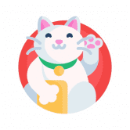 NekoCat Finance NekoCat Finance 旨在为投资者弥合安全性和优化回报之间的差距。通常情况下，高回报与投资者可能无法承受的更高风险密切相关。该项目的重点不仅是管理项目的安全方
NEL HYDROGEN NEXT EVOLUTION LEVEL 我们将两个世界的技术连接起来 氢技术和区块链在这个项目中首次在这里连接，并连接到一个不断增长的生态系统，以结合两个世界的优势。Alternat
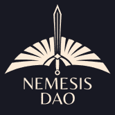 Nemesis DAO Nemesis DAO 是一种基于币安智能链（BSC）的去中心化金融储备货币协议。该协议由 NMS 令牌提供支持。 对质押者的主要好处来自供应增长。该协议从国库中铸造新的
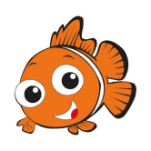 NEMO NEMO是一个去中心化自发社区建设的实验。NEMO 代币是我们的第一个代币，允许用户持有数十亿甚至数万亿的代币。这个绰号为 SHARK KILLER 的 BEP-20 ONLY 代币可以保
Neo Tokyo Identities Neo Tokyo 系列的 NFT 对于大多数藏家来说应该是又熟悉又陌生，熟悉的原因是近两个月，在 OpenSea 的 Rank 排行榜中经常出现这一系列的身影，价格最高的 Citzens 系列地板价约为 5
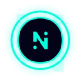 Neom harvest Neom Harvest 是一个基于智能合约的去中心化参与式会员传销平台。NEOM HARVESTii 是下一代全球社区计划，也是 BSC 上首个此类智能配方。这是一个单线会员计划。新参与者
Neon District Neon District 是一款免费的赛博朋克角色扮演游戏，以 Matic 和 Ethereum 上的可收藏 NFT 为特色。玩家收集角色和装备，打造并升级装备齐全的团队，并通过 Neon Pizza 竞争性多人任务或实
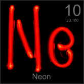 Neon Finance Neon Finance，Noblegas 多边形网络上的多层去中心化金融。 名称：氦气代币 符号：氦 合同： 0x930c2f3c26db0de2352d3dd45664003b5b375de6 链：多边形网络 最大供应量： 7800 发射率：每块 0.02 HELIUM
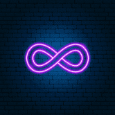 Neon Megapolis NFT Neon Megapolis 是第一个由 Polygon 网络提供支持的虚拟城市之一，专为 Metaverse 构建，由创新技术设计。 我们的未来城市是由存储在区块链上的属性设计的。每个可收藏的 ERC-721 (NFT) 代币的
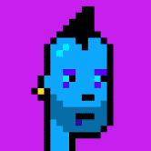 Neon Zombie Reward CLub BSC 上有 10,000 只霓虹僵尸，每只都给你分享版税。Neon Zombie 被认为是由奖励系统链接的三个系列中的第一个。如果您拥有至少一个僵尸，您将获得 Neon Zombie 集合中所有
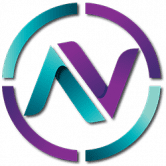 NeonChain NeonChain 是一种金融协议，在币安智能链 (BSC) 上结合了多策略收益优化，具有低费用/滑点。通过持有 NNC 代币，您每次在平台上发生交易时都可以获得 BNB 和 NNC 奖励。 ✅ 核
Go Poker Go Poker 是一个基于 EOS.IO 协议的去中心化德州扑克游戏平台。 Go Poker 提供专业水平的游戏体验。 支持的钱包包括 Scatter 和 Token Pocket。GGPoker 是世界上最大的扑
Goblin Finance 在这个基于 Fantom 链的 DeFi 平台上安全赚钱，2021 年最好的链！我们将创建一个安全和自动化的平台，用户可以在该平台上质押他们最喜欢的 LP 来赚取 Gobli
Goblin Wars 向大酋长致敬！ 欢迎来到地精战争！ #BSC 区块链上的#play2earn #NftGaming 游戏！ Goblin Wars 是一款策略、任务导向的游戏，具有生动的经济，灵感来自老式 RPG 和游戏
goblintownNFT AAAAAAAUUUUUGGGHHHHH 地精 地精 地精 GOBLINNNNNNNNNns 在地精镇醒来你闻 RATS oooooh 老鼠是 yummmz 这是 BLOKCHIN 上的 NEFTEEE 或 GOBBLINGS 什么？ 哦。 crustybutt goblinking 说 GEE EMMM DEDJEN RUTS 和queenie 说 HLLO SWEATIES 好的，那就是再见我们是被遗忘的妖精
GoBull Swap GoBullSwap - Yield Farming 概念 通过 GoBullSwap 上的 Yield Farming，用户可以利用将他们的加密货币置于赌注中赚取高额利息。 根据 DeFi 分析和排名平台 DeFiPulse 的数据，DeFi 协议在这些
Gods and Legends GNL 是一个成功的 NFT 集合，在多个区块链上得到验证。 WAX 区块链上的顶级多功能集合之一，共有 9 万多个社交媒体关注者。 在短短 9 个月内，它已售出超过 10 万本
Gods Unchained Gods Unchained 是区块链上的 AAA 级游戏，由 Coinbase 等投资者提供支持。 第一季独家卡牌销售现已上线 - 立即拆箱。荣幸和你们见面;我是 Fletch，Gods Unchained 的电子竞技
GOLD GRINDER GoldGrinder 是所有 BNB 矿工中改进最多的版本！ 这是一个锁定质押 dapp，可为您提供高达 9% 的投资回报。您还可以获得 12.5% 的推荐奖励。Gold Project 是一个生态系统，拥
 当您收集所有 9 个卡片部件并完成图片时，您将收到一张价值 100 美元的特殊 NFT 卡片和代币。")


、丙烷和氢气的加油站。我们正在建立一个合作伙伴网络，他们也将接受加密技术和区块链作为支付方式。")